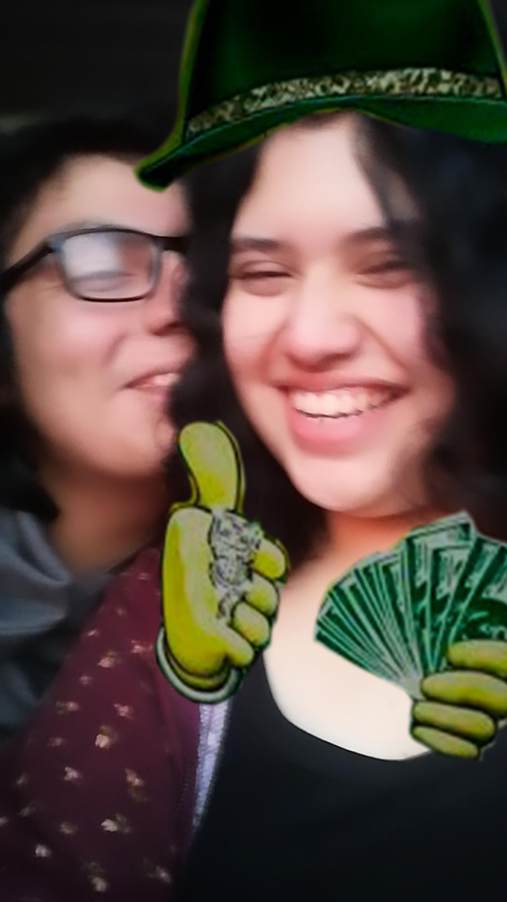

Hola mi amor ¿Sabes que dia es hoooooooyyy?
En efecto hoy es el dia mundial de la salud mental jajsjkaksk
Atk mi amooorrrrr hoy hacemos 11 meses mi vidaaaaaaa lindaaaaa
Hola mi amor, buenas noches, el dia de hoy intente hacer un regalo que te dure para siempre, o bueno, mientras exista el internet, chip si aun no te has dado cuenta esto es una pagina web y sip, la puedes abrir desde cualquier lado.
Entonceeeesssssss, mas que nada lo que quiero es que esto te quede como un buen recuerdo mi amor, si lo llegas a ver bien justo aqui arriba tengo unas cuantas fotos que han llegado a ser muy importante para mi, y en las cuales considero yop que salimos muy pero muy bonitaaasssss. Puedes encontrar ejemplares como cuando fuimos a el parque morelos, como cuando fuimos a divino cielo, como cuando me maquilaste, tambien de las veces que hemos estado en tu azotea y tambien de cuando fuimos a toks
Muchas gracias por todo Angieeeeee, ya 11 meses, dioooooosssssss falta tan solo 1 mes para el añoooo ay quemocion, pero ay hoy estamos a los 11 meses y tambien hay que celebrarlos, en todo este largo y basto tiempooo he aprendido tantas cosas, como de ti y de mi. Puedo decir que he llegado a conocer a la niña mas perfecta que conocere en toda mi vida, es la niña mas linda te juro que la vez y mueres de la ternura al ver tal pedazo de lindura, es la niña mas hermosa que puede haber tiene los rizos mas lindos que conoceras en tu vida, unos ojos tan envolventes que hacen que te pierdas por momentos al hablar con ella, una nariz toda preciosa y unos labios gruesos tan perfectos. Puede que por momentos no sea la persona mas feliz que puedas conocer, pero te aseguro que cuando la haces sonreir veras la perfeccion personificada.
Sin mucho mas que decir, mil gracias Angeles, gracias a ti he mejorado como persona, me he encontrado y aceptado a mi misma muchisimas veces, eres el soporte de mis dias mi amor, y aunque se que normalmente no soy la mejor chica, y mucho menos la mejor novia, dia con dia intento hacer mi mejor esfuerzo, cada dia aprendo mas cosas y entiendo lo que es sentir y sin mas cuando estoy contigo es bloquear mi cabeza y dejar todo en manos de las tuyas pq se que cuando estoy contigo no quiero otra cosa que pasar y disfrutar del tiempo a tu lado
Te amo mi princesa B>
Espere actualizaciones jsjsjs